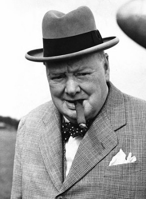

#11801 Carry On 28 - Ist ja irre - Retter der Nation
Alternativ: Carry On England (Englischer Titel)


 IMDB-Wertung: 4.0 / 10
IMDB-Wertung: 4.0 / 10  Metascore: 0
Metascore: 0 
Anfang des zweiten Weltkriegs, während die Luftschlacht um England tobt, geht es in der britischen Flugabwehr-Einheit 13/13 nicht mit rechten Dingen zu. Captain S. Melly soll sich ein Bild über die Lage machen und gegebenenfalls berichtigend einschreiten. Bei seiner Ankunft trifft der Captain, ein Offizier alter Garde, auf einen disziplinlosen Haufen nichtsnütziger Idioten. Und was noch viel schlimmer ist, die Hälfte der Einheit besteht aus Frauen! Anstatt sich der Abwehr der deutschen Flugzeuge zu widmen, wird lieber der Körper des anderen Geschlechts erkundet. Außerdem ist das Flugabwehrgeschütz aus Holz!? Mißstände, die Captain Melly mit der Hilfe des cholerischen Sergeant Major Tiger Bloomer wieder gerade rücken will. Insbesondere, weil seine Vorgesetzten ankündigen, sich vor Ort ein Bild von seinen Erfolgen zu verschaffen ...
Jahr: 1976
Dauer: 84 Minuten
FSK:
Land: England Studio: Carol Media HomeTonspuren:
Untertitel:
Auflösung: SD (576x432) Größe: 699 MB
Genre: Komödie, Krieg
Regisseur: Gerald Thomas
Drehbuch: David Pursall, Jack Seddon
Soundtrack: Max Harris
Darsteller:
 Kenneth Connor als Captain S. Melly
Kenneth Connor als Captain S. Melly- Windsor Davies als Sergeant-Major 'Tiger' Bloomer
 Judy Geeson als Sergeant Tilly Willing
Judy Geeson als Sergeant Tilly Willing- Patrick Mower als Sergeant Len Able
 Joan Sims als Private Jennifer Ffoukes-Sharpe
Joan Sims als Private Jennifer Ffoukes-Sharpe- Melvyn Hayes als Gunner Shorthouse
 Peter Butterworth als Major Carstairs
Peter Butterworth als Major Carstairs- Peter Jones als Brigadier
 Julian Holloway als Major Butcher
Julian Holloway als Major Butcher David Lodge als Captain Bull
David Lodge als Captain Bull- Larry Dann als Gunner Shaw
- Johnny Briggs als Melly's Driver
- Vivienne Johnson als Freda
 Billy J. Mitchell als Gunner Childs
Billy J. Mitchell als Gunner Childs- Linda Regan als A.T.S. Private Taylor
- Barbara Rosenblat als A.T.S.
-  Winston Churchill als Himself (archive footage) (uncredited)
- Jack Douglas als Bombardier Ready
- Diane Langton als Private Alice Easy
- Brian Osborne als Gunner Owen
- Patricia Franklin als Corporal Cook
- John Carlin als Officer
- Linda Hooks als Nurse
- Michael Nightingale als Officer
- Jeremy Connor als Gunner Hiscocks
- Richard Olley als Gunner Parker
- Peter Banks als Gunner Thomas
- Richard Bartlett als Gunner Drury
- Peter Quince als Gunner Sharpe
- Paul Toothill als Gunner Gale
- Tricia Newby als Bombardier Murray
- Louise Burton als A.T.S. Private Evans
- Jeannie Collings als A.T.S. Private Edwards
- Barbara Hampshire als A.T.S. Private Carter
- Philip Barnes als Gunner Sharpe (uncredited)
- Paul Humpoletz als Gunner Lewis (uncredited)
Datei: X:\7+mehr(A-Z)\Carry On\Carry On 28 - Ist ja irre - Retter der Nation (1976, FSK, 576x432).avi seit 20.09.2019
Festplatte: HD Collection-7+mehr(A-Z)+Person
 Es gibt insgesamt 33 Filme in der Gruppe '7+mehr(A-Z)\Carry On'
Es gibt insgesamt 33 Filme in der Gruppe '7+mehr(A-Z)\Carry On'